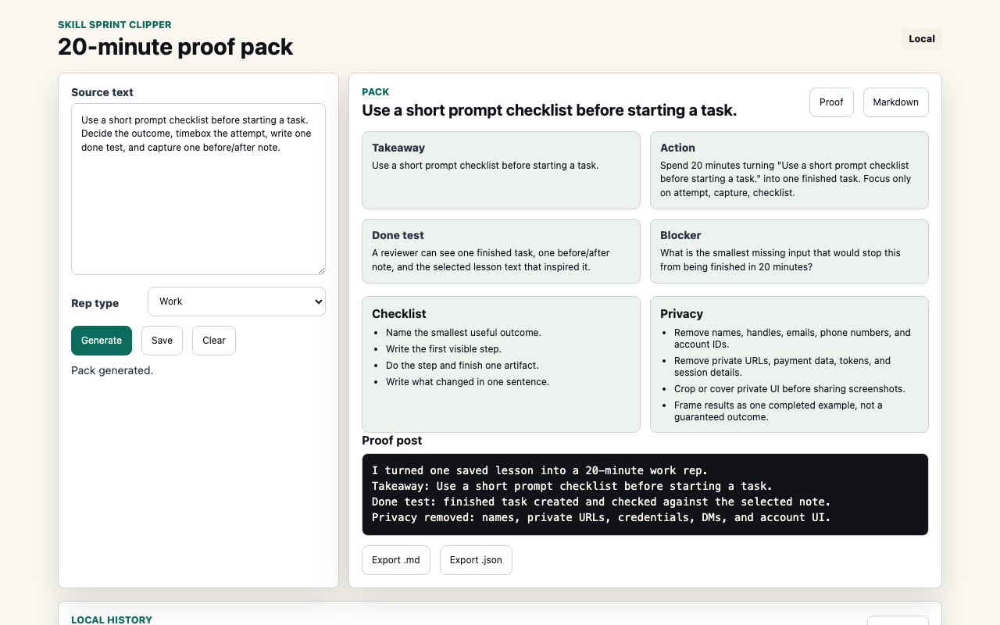

Generate
Create a takeaway, 20-minute action, checklist, done test, blocker question, share note, and reusable skill card.
Turn selected lesson text, workflow notes, or pasted study notes into a local 20-minute skill pack with an action, done test, share note, and validation checklist.

The first release avoids passive browsing capture and broad permissions. It works from text the user selects through the context menu or pastes into the popup.
Create a takeaway, 20-minute action, checklist, done test, blocker question, share note, and reusable skill card.
Copy pack text, copy Markdown, export Markdown or JSON, and save packs to extension-local history.
Delete individual saved packs or clear local history from the extension. No account or hosted storage is used.
No account, no analytics, no ads, no remote model calls, no persistent host permissions, no private community extraction, no posting automation, and no developer collection of user content.